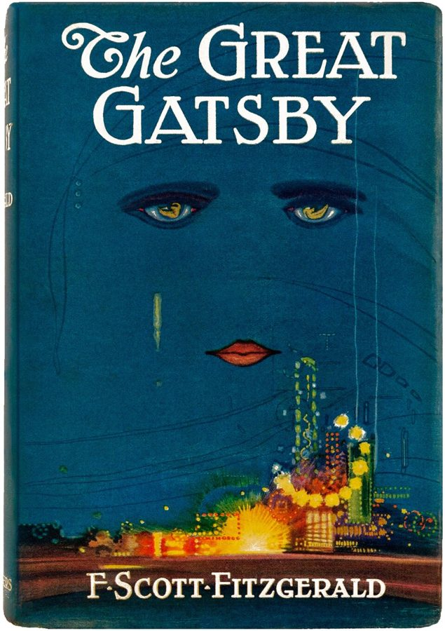
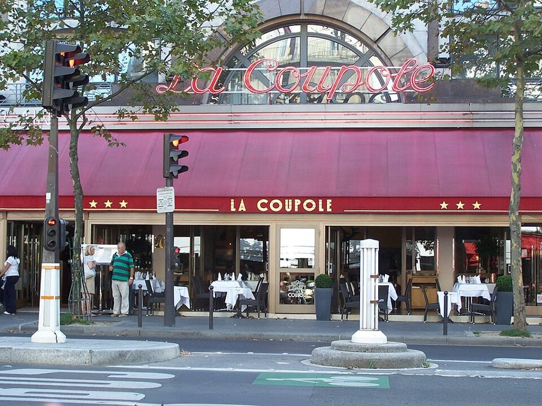

这一篇在做什么
1998 年春天，作者一家常去的 Balzar 饭馆被连锁集团 Flo 买下。常客们组织起「Balzar 之友」，订座占领饭馆、拍桌子喊口号，又和老板 Bucher 吃了一顿早餐。全篇抓两条线：一条是这场保卫战，越打越像喜剧；一条是作者自己，一个平时劝法国人「接受变化」的美国人，这回为什么不肯接受。读的时候留意 §3 中间那段长长的自白，和结尾「巴黎的我」「美国的我」各说的那一句。
Balzar 的店面，2013 年。玻璃窗里高处那排圆球灯，§1 写到过；左下角的玻璃上写着 depuis 1886（自 1886 年），和书里说的年份对不上，见「背景」。Calyste23，CC BY-SA 3.0，维基共享资源 读之前：这篇的来历
文中有两处能定时间：§1 说若斯潘「三年前」竞选总统（1995 年），§4 的占领定在 6 月 25 日星期四，那是 1998 年。店是这年 4 月卖的，和第 16 篇的世界杯是同一个夏天。它在第四部分「描绘世界的机器」，前一篇写世界杯，后一篇写美国厨师 Alice Waters 在巴黎。一家人到巴黎快三年了，Luke 三岁多。这一篇停在占领和早餐之后，结尾用的是现在时；这场仗后来怎样，作者在第 20 篇接着写。Balzar 也不是第一次出场：第 12 篇谈法国菜时，作者就拿它当巴黎最好的那类饭馆的例子。
一个平时劝法国人「接受变化」的美国人，为什么要去保卫一家饭馆一成不变？这份依恋是可笑的怀旧，还是站得住的？
读的时候带着这几个问题。不用先找答案，读完回来对照「检查一下理解」。
§1 那么长的饭馆描写里，作者最舍不得的是菜吗？挑出他真正在乎的几样。§1
侍者 Thierry 担心的事，和常客们在公寓里传的「恐怖故事」，是同一类担心吗？§2 §3
作者说自己「虚伪」，虚伪在哪里？他先给自己找了一个体面的理由，为什么马上又推翻了？§3
Bucher 全都答应了，常客们为什么反而无话可说？作者信不信他？§5
这一篇的路线
全篇顺着时间走：四月听说店被卖，六月占领，然后和老板吃早餐。这条事件线本身是喜剧，作者却几次从店里抽身，回头审问自己：§3 从常客开会突然转进一大段自白，从「我也虚伪」一路说到盖茨比和收银机；§4 拿波士顿倾茶事件取笑自己的占领；§5 结尾让「巴黎的我」和「美国的我」各说一句。读译本时最容易读丢的是 §3 那段自白，它是全篇的轴心，前后的事都绕着它。§1 那么长的饭馆描写也不是闲笔：后面要保卫的，就是这些细节。
店里
作者
§1
§2*
§3*
§4*
§5*
椭圆盘换圆盘
卖给了 Flo
侍者的账
公寓里开会
我的双重标准 盖茨比、收银机
占领之夜
倾茶
早餐：没问题
两个我
本站示意图。橙点是店里发生的事，蓝点是作者停下来审问自己，折线是阅读顺序，虚线是节的界线（带 * 的是本站分的节）。 作者落在哪： 作者承认，「一切都会变」的道理他向法国人讲过无数遍，轮到 Balzar 却不在乎，因为这回变的是他自己的日子；他佩服常客们不把对一家店的依恋，看得比收银机对它的「依恋」更虚。仗打成了喜剧，老板全盘答应；结尾两个自己各说一句，他没有裁决。
分节地图
原书这一篇没有分隔，一口气写完。本站按内容分成五节：§1 是开头，带 * 的四节是本站分的，原书里找不到分隔，靠粗体的场面和下面斜体的英文开头认位置（打开电子书搜英文就能跳到那里）。读完一节打个勾。
皮长椅、圆球灯、椭圆盘换圆盘约 700 词 The Balzar, on the rue des Écoles, … 把店里的细节一样样摆出来。记住它们，后面要保卫的就是这些。 四月一个周日晚上：「店卖了」约 800 词 On a Sunday night in April, … 坏消息和 Flo 集团；侍者 Thierry 讲店里的另一面。留意礼服和西装的暗号。 堤岸边的公寓里开会，然后是一段自白约 1000 词 Within a week or so a group … 常客们传的「恐怖故事」和行动计划；接着作者审问自己，全篇的轴心在这里。 6 月 25 日晚上，一屋子常客拍桌子约 800 词 June 25 was picked as the day … 抗议现场的喜剧。作者发现「占领饭馆」这个计划有个漏洞；然后上了报。 和 Bucher 吃早餐：「没问题」约 800 词 To the surprise of my American self, … 对手全盘答应。最后一段两个「我」各说一句，读慢一点。
背景：作者默认你知道的事
按在书里出现的顺序排，标题前是节号。
§1 Balzar 和学院街Balzar 在第五区学院街（rue des Écoles），拐个弯就是索邦大学，所以 §3 说常客多是编辑、出版人和教授。开店年份有两种说法：书里 Thierry 说侍者的手艺「从 1894 年算起」，另一种常见的说法也是 1894 年由 Amédée Balzar 开张；店门玻璃上却写着 depuis 1886（自 1886 年）。本站不裁定。1931 年它被 Lipp 老板 Cazes 家买下，重新装修过。
蒙田（Montaigne）坐像，Paul Landowski 作，在学院街边、班勒韦广场（place Paul-Painlevé）中间的小公园里，就在索邦大学门前。书里说从 Balzar 的玻璃窗能望见一个「献给蒙田的漂亮小公园」，指的多半是这里。这个公园 2021 年改名萨缪尔·帕蒂广场。Alejandra Quiroz Hernández，CC BY-SA 4.0，维基共享资源
§1 brasserie、Lipp 和若斯潘的那顿晚饭brasserie 在法文里本义是啤酒厂。书里说它源自阿尔萨斯、卖啤酒、开到很晚；巴黎好几家老 brasserie 是阿尔萨斯人开的，左岸最出名的 Lipp（1880 年开张）就是一例。书里说 Lipp 是第五共和权贵的食堂，若斯潘偏偏到 Balzar 吃饭、让《巴黎竞赛画报》（Paris Match）拍下来，用意不言自明。第 7 篇讲过 Lipp 的老板；第 12 篇作者说 Balzar 和 Lipp 是「乖孩子和坏孩子」，Balzar 是乖的那个。
若斯潘，2001 年 3 月，时任法国总理，在布鲁塞尔访问欧盟委员会。Christian Lambiotte / European Communities, 2001 / EC - Audiovisual Service，CC BY 4.0，维基共享资源
若斯潘 Lionel Jospin 社会党政治人物。1995 年代表社会党竞选总统，第二轮输给希拉克（Jacques Chirac）；1997 年 6 月起任总理。书里称他「有德行的社会党人」，正想改造法国政治。
§2 「在此倒下，为法国……」巴黎街头的墙上常能看到小石牌，纪念 1944 年 8 月解放巴黎时在那里牺牲的人，多以「Ici est tombé」（在此倒下）开头。作者和 Martha 拿它开玩笑：等他们死了，骨灰坛就摆在 Balzar 的甜品柜上，牌子也照这个格式写。把吃饭说成殉国，是这一篇第一次大词小用，后面还有「革命」「抵抗运动」。
§2 Flo 集团和它的老板Bucher 1968 年买下巴黎十区的 Brasserie Flo 起家，所以 Thierry 说 Flo 的手艺「从 1968 年算起」，意思是：我们的老，他们比不了。之后几十年他陆续买下多家老字号 brasserie，1992 年又买下平价连锁 Hippopotamus。书里说 Flo 在巴黎迪士尼乐园有五家餐厅，书里骂它的词里就有「迪士尼化」。书里点名的 Le Boeuf sur le Toit（屋顶上的牛）也是老店，名字来自 1920 年科克托（Cocteau）和米约（Milhaud）的一出舞台剧。
Bucher Jean-Paul Bucher Flo 集团的创办人，阿尔萨斯人，侍者出身。书里说巴黎人叫他的集团「Flo 压路机」。§5 他说自己六十岁，和他 2011 年去世时 73 岁对得上。
§2 服务费和「garçon」法国餐馆的账单里含服务费（service compris），书里说是 15%。Thierry 说，Flo 接手以前，每晚由一位侍者把这笔钱收进抽屉，每人都有一把钥匙；现在要等五个星期。garçon（男孩）是叫侍者的老说法，客人这么喊如今被认为不客气，书里说这个词「通常是禁忌」；侍者自己这么叫，反倒带着蓝领的骄傲。Thierry 是化名，作者在这一节里自己交代了。
§3 盖茨比：「不能重复过去？」《了不起的盖茨比》（The Great Gatsby）是菲茨杰拉德（F. Scott Fitzgerald）1925 年的小说，美国中学普遍要读。叙述者劝盖茨比：过去是不能重来的。盖茨比答：当然可以！书里说美国学生都被教导，盖茨比的悲剧就在这个信念里。作者反问：我们每天都在重复过去。紧接着借美国诗人、评论家 Randall Jarrell（1914–1965）的说法「我们生命里的那一天」，出处书里没说。

《了不起的盖茨比》1925 年初版的封面，Francis Cugat 画。Francis Cugat（封面画），公有领域，维基共享资源 §4 La Coupole：「以前的客人！」La Coupole 是蒙帕纳斯大道上的大 brasserie，1927 年开张，两次大战之间是画家、作家聚会的地方，1980 年代后期被 Flo 买下。§4 有人问「在座有多少人是 La Coupole 的老客人？」，全场齐喊「Anciens!」（以前的！），意思是 Flo 接手以后他们就不去了。第 20 篇里还会回到这家店。

La Coupole 的门面，2011 年。LPLT，CC BY-SA 3.0，维基共享资源 §4 波士顿倾茶事件1773 年 12 月，波士顿的殖民地居民反对英国的茶叶政策，登上东印度公司的船，把一箱箱茶叶倒进港里，这是美国独立战争的前奏之一，美国孩子人人知道。作者说，占领饭馆再点菜吃饭，等于爱国者登了船，把茶叶全买下来，然后泡了喝。
Nathaniel Currier 1846 年的石版画，画的是七十多年前的倾茶事件。Nathaniel Currier，公有领域，维基共享资源 §4 上了哪几份报《玛丽安娜》（Marianne）是 1997 年创刊的周刊，《费加罗报》（Le Figaro）是老牌的右派日报，《世界报》（Le Monde）是法国最有分量的日报之一。作者拿《世界报》的美食评论人 Quélin 比美国的 Jonathan Yardley，美国读者一看就懂：一个下笔不留情的评论家。
Quélin Jean-Pierre Quélin 书里说他是《世界报》的美食评论人，撰文说 Balzar 的菜一向难吃，Flo 接手后更难吃。本站没有查到他的更多资料。
Yardley Jonathan Yardley 美国书评人，1981 年得普利策评论奖，同年起在《华盛顿邮报》写书评三十多年，以直言不讳出名。
词与短语
只收中文译文多半传不出原味的地方：熟词生义、反话和挖苦、典故、夹在英文里的法文。读译本读到觉得别扭、不知道作者在说什么时，来这里找那一节的；斜体小字是原句里的几个英文词，在电子书里搜它就能找到原文。
§1 皮长椅、圆球灯、椭圆盘换圆盘
happens to be
… happens to be the best restaurant …
（碰巧）正是
字面是「碰巧是」，口气轻描淡写，说的却是「全世界最好的饭馆」这种大话。故意用随口一提的语气说最夸张的判断，是这一篇开头的玩笑。
covers
… with only ninety or so covers …
餐位
饭馆行话，一个 cover 是一位客人的一套餐具和座位。§5 Bucher 说「一百个餐位」，也是这个词。
maîtres d’hôtel
… by the two maîtres d’hôtel …
（法文）领班
在门口迎客、领位的人，英文也借用，常简称 maître d’。一个穿礼服、一个穿西装，§2 才揭开这里面的暗号。
your weekend gross
… your last review, or your weekend gross …
你上个周末的票房
gross 是票房总收入。这一串是挖苦纽约和好莱坞的饭馆：领班先估你的钱包、你上一篇书评、你电影的票房，再决定怎么待你。Balzar 不这样。
carte
The carte is a long printed card …
（法文）菜单
法文里 à la carte 是单点的菜单，menu 反而指套餐。作者用法文词，是在照店里的叫法。
in an expansive mood
… if you’re in an expansive mood …
心情好、想阔气一回
expansive 在这里不是「广阔」，是人兴致高、出手大方。想点鹅肝的时候。
sotto voce
… to evaluate, sotto voce, the size …
（意大利文）压低声音
本是乐谱术语。侍者一边拉开桌子给女客让路，一边小声品评她的身材。作者把它和风趣、热心一起列为侍者的特点，口气是宽容的。
the sanity of superfluous civilization
… in the sanity of superfluous civilization.
多余之物的文明，自有它的清醒
把菜从椭圆盘一样样挪到圆盘，工作量加倍，毫无必要。作者偏说这让他重拾信心：文明恰恰在于这些多此一举。sanity（神志正常）和 superfluous（多余）放在一起，是个故意的反差。见「值得停下来的句子」。
Everyone got the point.
Everyone got the point.
谁都明白这是什么意思
话说一半。不去权贵扎堆的 Lipp，偏去 Balzar 吃给杂志看，用意大概是表态：我和那些掌权的人不是一路。作者不点破，留给读者会心一笑。
§2 四月一个周日晚上：「店卖了」
Here, fallen for France
… all over Paris: “Here, fallen for France …
在此倒下，为法国……
巴黎街头纪念解放时牺牲者的石牌的格式（见「背景」）。把常客在饭馆吃到死说成为国捐躯，是故意的大词小用。
sud-ouest
His gravelly sud-ouest voice was pitched low …
（法文）西南部的（口音）
法国西南部口音，在巴黎人耳朵里带乡土味。领班 Jean-Claude 一开口，作者就听出他压着嗓子、不对劲。
rouleau compresseur
… the rouleau compresseur Flo, the Flo steamroller …
（法文）压路机
形容所向披靡、碾平一切的力量。作者紧跟着给了英文 steamroller。
Disneyfication
… and even Disneyfication; Flo runs five …
迪士尼化
把有历史的地方做成干净、统一、像主题乐园的样子。前面一串词（合并、全球化、标准化）一个比一个狠，这个是最狠的骂法。
seen from below
… of the Balzar, seen from below …
从底下看的（历史）
套的是 history from below（自下而上的历史），史学里指从普通人而不是帝王将相的角度写历史。这里是侍者眼里的店史，和常客眼里的那个温馨饭馆不一样。
in mufti
He was in mufti, wearing jeans …
穿着便装
英式老说法，原指军官下班换上便服。用在侍者身上，暗示他们平时穿的是「制服」。后面拿纽约便衣警察的蓝夹克作比，也是这个意思。
garçons
… old-fashioned word garçons, or boys …
（法文）侍者（字面：男孩）
叫侍者的老说法，客人当面这么喊现在算不客气。侍者自己用，意思就变了，见下一条。
blue-collar integrity
… gave their profession blue-collar integrity.
蓝领的体面
integrity 在这里不是「正直」，是完整、站得住的身份感。garçons 加 restauration 两个老词，把端盘子说成一门正经的手艺活。
savoir-faire
“They express a savoir-faire that dates …
（法文）手艺、门道
英文也借用，多指社交上的得体。Thierry 用它比老资格：Flo 的门道从 1968 年算起（正是 Bucher 起家那年），我们的从 1894 年。
on the service
… had been put “on the service,” drawing …
从服务费里拿薪水
service 指账单上那 15% 的服务费。新来的经理要从侍者的小费池里分钱，这比改菜单更让侍者火大。
§3 堤岸边的公寓里开会，然后是一段自白
it was really a restoration
… it was really a restoration.
那其实是恢复老菜
restoration 有「复原」和「复辟」两层意思。上一节 Thierry 怕 Flo 借口「修缮」（restoration）关店，这里常客又说新菜其实是二十年前的老菜，同一个词换了方向，作者在玩它。
nurse
… that you can nurse even a cup …
慢慢守着（一杯咖啡）
nurse a drink 是小口慢喝、一杯坐很久，不是「护理」。Balzar 的老规矩是不赶客。
so American
… no other word for it—so American.
太美国了
在法国常客嘴里，「美国」就是最重的骂人话：七十分钟就上账单。作者自己就是美国人，转述时带着自嘲。
dying on the vine
… dying on the vine while a couple …
干耗着、白白熬死
本义是葡萄没摘就在藤上枯了。作者想象圣塔莫尼卡那位女侍者：她赶着去上太极课或表演课，两个法国人却坐着喝酒、解决世界问题。他两边都调侃了。
camion
… spotted a Flo Group camion parked …
（法文）卡车
有人说清早六点看见 Flo 的卡车往店里送货。注意这些都是「据说」，常客们在传，作者没有证实。
We had a left, a right, and a center
We had a left, a right …
还没成立党，就先有了左中右三派
取笑法国人凡事政治化：几个人凑到一起商量救饭馆，立刻分出抵制派、静坐派、写信派。
slowdown on the barricades
… foie gras slowdown on the barricades.
街垒上的「鹅肝怠工」
slowdown 是工人的怠工，barricades 让人想起 1968 年的街垒。那位女士示范怎么把鹅肝抹得极慢，像个身经百战的老革命。大词小用。
tiresome and sensible
… the same tiresome and sensible logic …
又烦人、又在理
两个形容词互相拆台：道理是对的，只是听着烦。这正是作者以前对法国人讲的那套「要接受变化」，现在轮到别人讲给他听。
disinterestedness
… too much credit for disinterestedness.
无私
disinterested 是「不掺私心」，不是「不感兴趣」，这是英文里有名的易错词。作者说，要是说我是为侍者着想，那就太抬举自己了。
Ralphie
Here, try Ralphie for a while.
（随口编的孩子名）
作者模仿收购方的口气：Bucher 把你家也买了，给你换个孩子，从中央育儿所来，只会说德语。把「变化是好事」推到荒唐，说明有些东西不该换。
unreciprocated love with a cash register
… unreciprocated love with a cash register …
对收银机的单相思
作者承认，资本主义的把戏之一，就是让顾客爱上一个只把你当钱的地方。可他佩服朋友们的地方在于：他们不认为自己对店的感情，比收银机对店的「感情」更虚。
§4 6 月 25 日晚上，一屋子常客拍桌子
tipping our hand
… to avoid tipping our hand.
露了底牌
打牌的说法，tip one’s hand 是不小心让人看到手里的牌。大家错开时间打电话订座，免得店里起疑。
Oui, madame
“Oui, madame,” said an obviously bemused …
（法文）好的，女士
作者紧张得声音发颤、调门太高，电话那头的领班把他当成了女士。自嘲。
sympa
… Oh, how sympa, you’re here too …
（法文）真巧、真好
sympathique 的口语缩写，亲切、讨人喜欢。常客们假装偶遇，演得太过，互相挤眼。
working stiff
… I’m the working stiff here …
打工的苦哈哈
美国口语，指靠工资过活的普通人。作者替经理 Delouche 想：我才是干活的，你们这些有钱人倒来闹。
gauchistes
… these people are rich gauchistes …
（法文）左派分子
带贬义，指激进左派。rich gauchistes 让人想到法国人说的 gauche caviar（鱼子酱左派）：有钱人的左派姿态。
a small whitecap of sympathy
… a small whitecap of sympathy for him …
心里泛起一小股同情
whitecap 是浪尖上的白沫。不是一波浪潮，只是一小朵浪花：作者说得很克制，同情的是对面那个打工的人。
Anciens!
“Anciens! Anciens!” we chanted in unison …
（法文）以前的（客人）！
ancien 是「从前的」。喊的意思是：我们以前常去 La Coupole，Flo 接手后就不去了。
won’t take it anymore
… that you just won’t take it anymore …
再也忍不下去了
抗议的套话。作者接着说你还得承认，你「要」（will take it）：要牛排，五分熟，配贝亚恩酱。take it 一词两义，忍受和点菜，抗议就这样塌了。
au point
… take it, au point and with béarnaise …
（法文）（牛排）刚好熟
法国牛排熟度之一，大致相当于五分熟。见上一条的双关。
médiatisation
… a little médiatisation, and we got it …
（法文）上媒体、引起关注
法文造词，把一件事「媒体化」。作者照用法文，带一点笑：一群人一边骂商业化，一边盼着上报。
radical fringe
By defining the Balzar radical fringe …
极端边缘派
政治术语搬到饭馆上：Quélin 说菜一直难吃、现在更难吃，等于站到了最极端的位置，「Balzar 之友」反倒成了温和理性的中间派。
§5 和 Bucher 吃早餐：「没问题」
Directorate
… with what amounted to our Directorate …
（我们的）督政府
影射法国大革命后的督政府（Directoire，1795–1799），由五位督政官掌权。把「Balzar 之友」的几个牵头人说成革命政府，又是大词小用。
right of usage
… a kind of right of usage.
使用权
法律上和所有权相对的概念。Lorenzo 说：店是你的，我们不否认；但我们常来，对它有一种使用的权利。认真的法律口吻，用在一家饭馆上。
esprit
… what mattered was the esprit of the …
（法文）精神、气质
这一句里 esprit 连用三次，像在念一份宣言。英文的 spirit 也行，用法文显得更庄重。
as-far-as-it-went went as far it could
… as-far-as-it-went went as far it could.
「就其本身而言」已经做到了头
as far as it goes 是「就其本身而言（但不够）」。作者把这个限定语连成一个词再接着用：Bucher 的诚意是真的，只是诚意能管的范围就这么大。
stay the same until it changed
… would stay the same until it changed.
在变之前，它会一直不变
听着像废话，其实是全篇最冷的一句：没人能保证它不变，只是还没变而已。结尾那句又说了一遍。
À la santé de l’association
À la santé de l’association …
（法文）为协会的健康干杯
法国人碰杯的说法 à la santé de…（祝……健康）。侍者端来香槟，压低声音说，像在接头。
like being in the resistance
It is like being in the resistance.
像是在搞抵抗运动
影射二战德国占领时期的法国抵抗运动。紧接着括号里又说：经理过来时我们也和他握手，大概这也像抵抗运动。第二次说时是在笑自己：一边密谋，一边客客气气地和对方握手。
objet de nos préoccupations
… describing the objet de nos préoccupations …
（法文）我们关切的事项
公文腔。作者特意留着法文，学的是 Lorenzo 那封信的郑重口吻。
后来
这一篇停在 1998 年夏天，结尾说 Balzar「会一直不变，直到它变了」。下面是这家店和它的买主后来的事。每条都写了核对日期，这类内容过一两年就会变。
Balzar 在 Flo 手里待了二十年
Flo 集团留着 Balzar 一直到 2018 年。这年集团出售了一批子公司，Balzar 在其中，买主是 Alain Grandière，他从 2018 年 9 月起任经营公司的董事长。2025 年的巴黎媒体报道里，它仍在学院街营业，还是老派 brasserie 的样子。核对于 2026-10。依据：Groupe Flo 2018 年度参考文件，法国企业登记信息（Pappers），Le Bonbon 2025 年 8 月的报道。
「压路机」后来自己被收购
Bucher 2011 年 9 月 3 日去世，终年 73 岁。他一手建起的 Flo 集团后来连年亏损，2016 年亏损 6500 多万欧元；2017 年 6 月，经营汉堡王法国业务的 Groupe Bertrand 接手了集团的控股权。书里那个吞并老店的连锁集团，最后也被一家更大的集团吞了。核对于 2026-10。依据：Hospitality ON 2011 年 9 月 6 日的讣闻，法国金融市场管理局（AMF）2017 年 4 月和 6 月的公告。
值得停下来的句子
It reaffirms my faith in the sanity of superfluous civilization.— §1，侍者把牛排从椭圆盘挪到圆盘那一段的结尾。本站译：这让我重新相信，多余的文明是清醒的。
sanity 和 superfluous 头韵相押，一个是「神志正常」，一个是「多余」，硬放在一起，像个悖论：多此一举的东西怎么会让人觉得世界正常？中文很难同时留住头韵和这个悖论。这一句也接着第 1 篇：作者在那里说，巴黎是有史以来最美的「日常文明」，咖啡馆、brasserie 都在里面。
The difference was not that it was happening to the Balzar. The difference was that it was happening to me.— §3，自白那一段的后半。本站译：区别不在于这事落到了 Balzar 头上，区别在于它落到了我头上。
两句话只换了一个词，Balzar 换成 me。前面他刚说，想说自己是为侍者着想，但那太抬举自己了；这两句把台阶撤掉，直说是为了自己。中文要译出这份坦白不难，难的是保住这种几乎一字不差的重复带来的力度。
检查一下理解
先在心里答，再点开。答错的那题，回书里把对应那一节再读一遍。
1.（§1）作者说 Balzar 是世界上最好的饭馆，理由是菜好吗？ 不是。他特意说不是因为菜最好，也不是因为时髦，而是一百样小事：领班的握手、不看人下菜、不变的菜单、把菜从椭圆盘挪到圆盘的老规矩。
2.（§2）两位领班一个穿礼服、一个穿西装，这里面有什么讲究？ Thierry 告诉作者，这是个暗号：穿西装的站在老板一边，穿礼服的站在员工一边。来报「店卖了」、眼里含泪的 Jean-Claude 穿的是礼服。
3.（§3）常客们定的口号是「吃，但慢慢吃」。为什么不干脆静坐、什么都不点？ 有人提醒：要是占着桌子不点菜，吃亏的是侍者，而他们正是为侍者来的。所以得点菜、吃饭，又要把桌子占一整晚，于是有人建议点能抹得很慢的鹅肝。
4.（§3）作者为什么说自己的兴奋里有虚伪？ 他和在法国的美国人一样，常埋怨法国人不肯接受变化、不肯接受市场。现在别人拿同一套道理劝他，他承认道理都对，可轮到 Balzar 他不在乎，因为要他放弃的是他自己的日子。
5.（§4）作者说他们的占领计划有个漏洞。漏洞是什么？ 饭馆本来就是被食客「占着」的。占领一家饭馆再点菜吃饭，实际上就是去那里吃了顿饭。他拿倾茶事件作比：等于登船把茶叶买下来泡了。
6.（§5）Bucher 一口答应了所有要求，常客们为什么反而没辙？Thierry 怎么看？ 他们没料到对方会全盘赞成：你想救的牛排、盘子和侍者，他指着说一样没变，你就没法跟他争。Thierry 说这是法国国王的老办法：把最大的敌人当最好的朋友。
用一句话说这一篇，写给一个没读过的人。
精彩回顾
读过又忘了，从这里想起来。挑的是这一篇最值得记住的场面和说法，不按原书顺序；每条后面是节号，想细看就回书里那一节。全书各篇的这一节都收在全书回顾 。
一句话： 常去的老饭馆被连锁集团买下，作者和常客们打了一场像喜剧的保卫战，也看清了自己：他要守的不是原则，是自己的日子。
椭圆盘换圆盘 Balzar 的菜先盛在椭圆盘上端来，侍者再一样样挪到圆盘里，活儿多一倍。作者心情不好就去看这个，说它让他重新相信多余的文明。
§1 吃，但慢慢吃 占领饭馆又不能让侍者吃亏，所以得点菜吃饭，还要占住桌子一整晚。有位女士当场示范怎么把鹅肝抹得极慢。
§3 倒不是因为 Balzar 作者承认，变化的道理他向法国人讲过无数遍。这回不肯接受，不是为了侍者，是因为要变的是他自己的日子。
§3 买下茶叶泡了喝 占领一家饭馆再点菜，等于去吃了顿饭。作者说，这就像倾茶事件的爱国者登了船，把茶叶全买下来，然后泡了。
§4 「没问题」 常客们准备好了一场谈判，Bucher 却全盘答应：我买它就是因为爱它。对手说什么都不变，你就没法跟他争。
§5